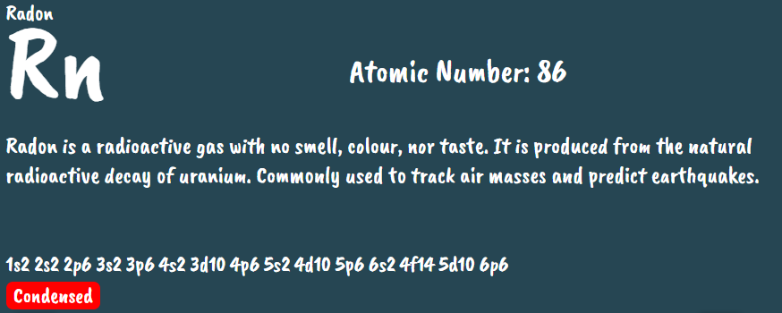
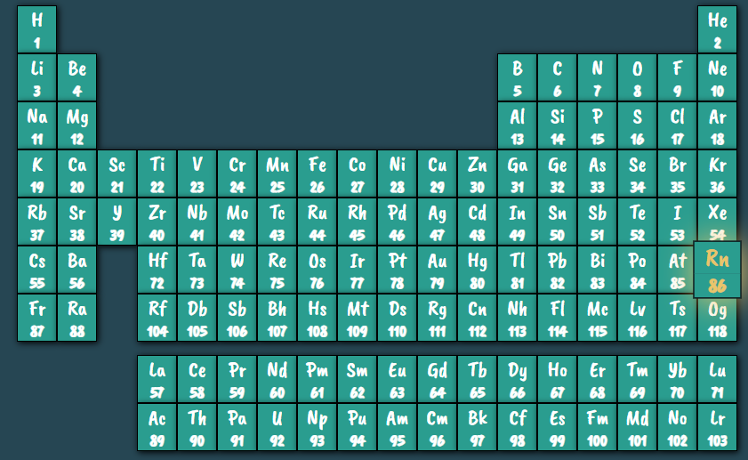
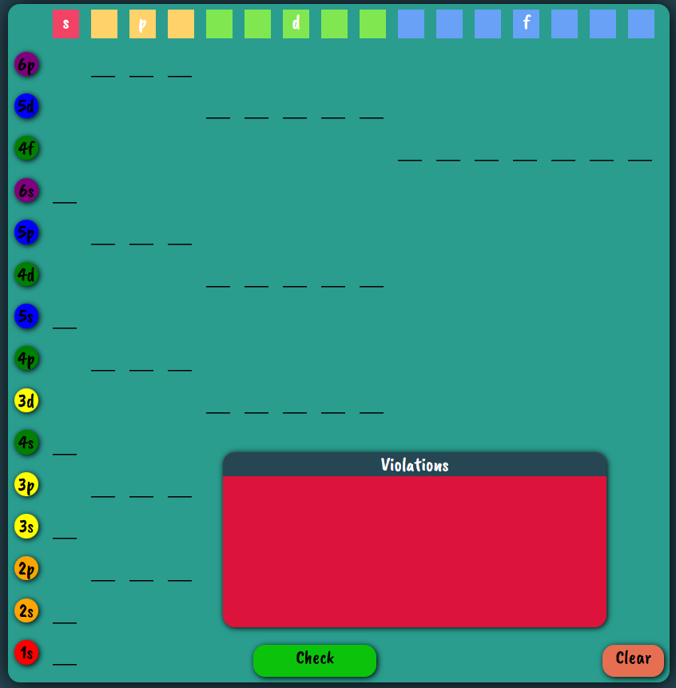

Element Display
The section at the top-left displays general information about the element that is selected by the user in the other two sections. The element symbol is displayed in bold text at the top-left corner. The atomic number of the corresponding element is displayed to the right of the symbol. Underneath, a short description of the element is given, along with the electron configuration.
To condense the electron configuration, the button named “Condensed” must be clicked.
Green = Condensed
Red = Complete

Periodic Table
The periodic table is a completely interactive table.
Each element up to Radon can be clicked. As the cursor hovers over, the element pops out and is highlighted.
Yellow Highlight = Element is able to be clicked. (Atomic #1-86)
Red Highlight = Element is not able to be clicked. (Atomic #87+)
The clicked elements’ general information will be displayed in the display section. The orbital shells will be automatically filled to match the element that was clicked.
Orbital Shell Sandbox
The section on the left is the orbital shell sandbox. Here, the shells will be filled with electrons if an element on the periodic table is clicked.
The shells go up to 6p6 and the orbitals go up to the f shell.
If the user chooses to build their own diagram, there is a clear button at the bottom left, highlighted in red.
As the user builds, the shells pop out as the mouse hovers over them.
One click = Up arrow
Two clicks = Up arrow and down arrow
Three clicks = Clears the orbital
When the user is finished, they can click a “check” button highlighted in green at the bottom of the screen. The check button has two functions:
1. Once pressed, the button will update the element description on the top-left of the screen to the element that the user built only if the user built it correctly. The check button updates the “violations” section to notify the user if their orbital diagram is proper and does not violate any principles.
2. The “violations” box will display any violation to the fundamental orbital principles that the user commits when pressing check. If the user is correct in building any of the elements, the violation will tell the user that they are correct.
Three Principles of Orbital Diagrams
Pauli Exclusion Principle
The Pauli Exclusion Principle states that, in an atom or molecule, no two electrons can spin towards the same direction. Orbitals can contain a max of two electrons, and the electrons MUST have opposing spins. This means if one electron spins upwards, the other electron must spin downwards.
Hund's Rule
Hund’s Rule explains that before the double occupation of any orbital, every orbital in the sub level is singly occupied. For the maximization of total spin, all electrons in a single occupancy orbital have the same spin.
Aufbau Principle
Aufbau’s principle states that electrons will occupy the subshells from lowest to highest energy.